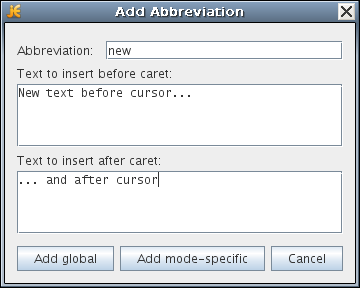

jEdit
2. Main Features of TCAD Customization
2.1 Syntax Highlighting
2.2 Macros
2.3 Command Completion
2.4 Abbreviations
Objectives
- To describe the most commonly used and convenient functionality of jEdit.
2.1 Syntax Highlighting
Syntax highlighting is implemented for selected TCAD Sentaurus tools. For syntax highlighting to work, jEdit must recognize the extension of the command file as an appropriate Sentaurus command file. The file extensions of the TCAD Sentaurus tools are assumed to be as follows:
| Tool | File extension |
|---|---|
| Sentaurus Process | *_fps.cmd, *.fps |
| Sentaurus Structure Editor | *_dvs.cmd, *.scm |
| Sentaurus Structure Editor sdeepi CSV file | *_epi.csv |
| Sentaurus Mesh | *_msh.cmd |
| Sentaurus Device | *_des.cmd |
| Sentaurus Device parameter file | *.par |
| Sentaurus Device Electromagnetic Wave Solver (EMW) | _eml.cmd |
| Sentaurus Visual | *_vis.cmd, *_vis.tcl |
| Inspect | *_ins.cmd |
| Sentaurus Interconnect | *_sis.cmd, *.sis |
If you use Sentaurus Workbench to create project and command files, these files will already use these extensions.
In addition, regardless of the file extension, jEdit supports syntax highlighting for preprocessor statements if the first line of a file contains a #setdep command.
With jEdit, you have different methods to insert frequently used commands or command blocks into the command file: macros, command completion, and abbreviations.
2.2 Macros
The simplest way to quickly insert commands or command blocks is to use macros. The Sentaurus customization package for jEdit provides many predefined macros for all Sentaurus modes.
To insert a macro and to see which macros are available, for example, in Sentaurus Process mode, choose Macros > Sentaurus-Process > <name of macro> (see Figure 1).
New macros cannot be defined using the user interface of jEdit. See the Download and Installation Instructions section of the customization package for details on how new macros can be defined (see Section 1.2 Downloading the Customization Package).
{kind=link}
Figure 1. Using macros to insert commands. (Click image for full-size view.)
2.3 Command Completion
jEdit allows you to start typing a command and then press a combination of keys to show a list of known commands that start with the typed portion. For example, in Sentaurus Structure Editor mode, you can type sdegeo: and then use the shortcut keys Ctrl+b. jEdit will show a list of all known commands that start with sdegeo: (see Figure 2).
Bold keywords are valid keywords according to the mode definition of jEdit. Non-bold keywords are other possible completions such as variable names that appear elsewhere in the command file.
{kind=link}
Figure 2. Command completion dialog box after pressing Ctrl+b. (Click image for full-size view.)
2.4 Abbreviations
You can type a portion of the text for a command, and then jEdit completes it automatically. You would typically type a few letters that represent the abbreviation and then press Ctrl+; (the Ctrl key with the semicolon key) to expand the abbreviation.
Abbreviations can be defined interactively by typing the intended new abbreviation and then pressing the Ctrl+; keys. This displays the dialog box shown in Figure 3.

Figure 3. Add Abbreviation dialog box.
After typing the expansion text, the new abbreviation can be stored and activated globally or for a certain mode only. The existing abbreviations can be edited in the dialog box shown in Figure 4.
To view the list of defined abbreviations:
- Choose Utilities > Global Options, or press Ctrl+F12.
- In the left pane, expand jEdit > Abbreviations.
{kind=link}
Figure 4. Dialog box for editing abbreviations. (Click image for full-size view.)
Copyright © 2022 Synopsys, Inc. All rights reserved.